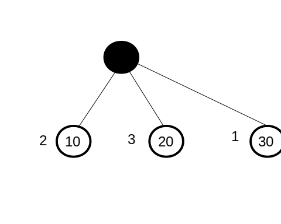
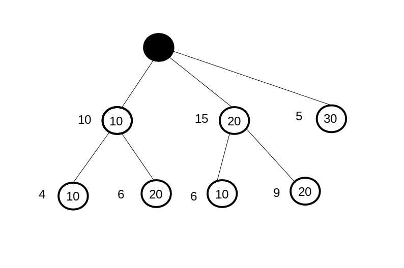
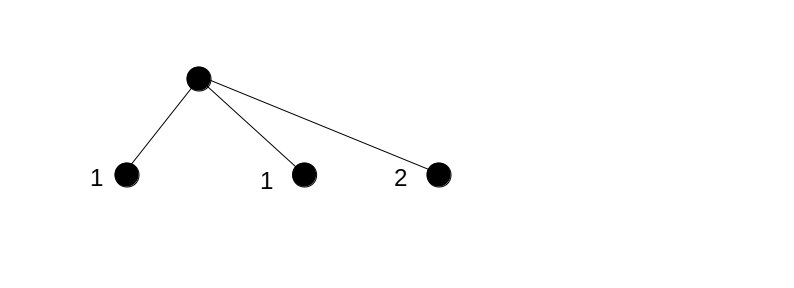
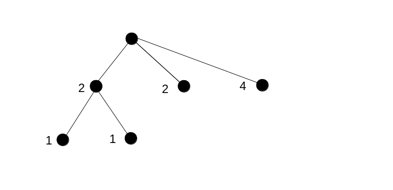
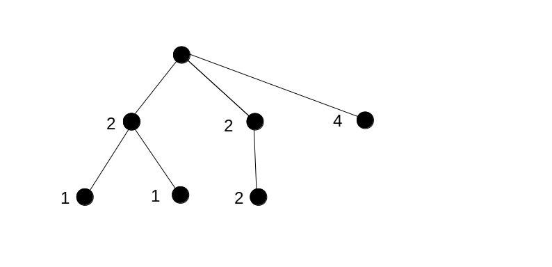
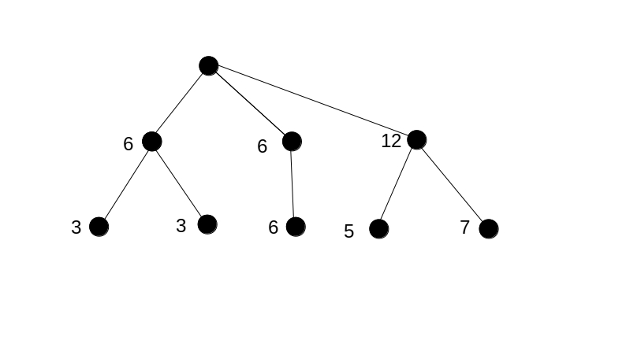

public interface SampleContext
Distribution. A Distribution is like a multi-set, the count of
each element being a non-negative integer. If a value v has count
c in the result distribution and if the total count of the result
distribution is n, then this encodes that the probability
of v is the rational number c / n.
Counting-language experiments can also be defined like possibility counting experiment ...
For distributions returned from such experiments, the numerators c are
meaningful: they can be interpreted as a number of possibilities.
This interface has static factory methods that can create two kinds of instances, one
kind producing meaningful possibility counts (for experiments like possibility counting experiment ...)
and the other kind normalizing to arrive at the lowest possible denominator
(for just just experiment ...).
The algorithmn implemented here is explained in three steps. First, it is explained how possibility counts are calculated. Second, it is explained how the experiment result is managed. Third, experiments without meaningful possibility counts are treated.
To clarify the question, lets consider the possible outcome (10, 10). To count the number of
possibilities, we can label the dice faces like a, ..., f and the
roulette wheel slots p, ..., t. Dice faces a and b
have the number 10 and wheel slots p and q have the number 10. The
possibilities we have to count are ap, aq, bp and
bq, which are 2 * 2 = 4.
To count possibilities, we start from two distributions:
First, we consider the first distribution, resulting in the probability tree shown below:

At this point, each counted possibility corresponds to one of the dice faces a, ... f.
For each outcome on the faces, the weight corresponds to the number of faces having that outcome.
Next, we add the second distribution. The meaning of a possibility changes. One possibility
is now the combination of a face a, ... f and a slot
p, ..., t. The weight of each node has to be multiplied by 5. The
outcome 30 now has five possibilities: we need a specific face but any outcome of
the roulette wheel suffices (1 * 5 = 5).
We add a second row of nodes for drawing the wheel, as shown in the following figure:

Each node at the bottom row shows how many possibilities there are for the path leading to the node. To the bottom-left, we see again that the outcome (10, 10) has 4 possibilities. The weight is calculated by dividing the (new) weight of the parent node by the new distribution's total (resulting in the weight of the previous diagram) and multiplying that with the count of the value within the wheel distribution. These last two operations, dividing by the new distribution's total and multiplying by the new value's count, can be interpreted as multiplying with a conditional probability. This is the conditional probability of drawing a value from the new distribution.
Possibility counts are only meaningful for experiments that consist of a series of sub-experiments. The distribution sizes of these sub-experiments may be different, but these sizes may not depend on the sampled values. If this rule would be violated, one would have to work with conditional probabilities that can not be interpreted anymore as possibility counts. The only exception is that sub-experiments may be omitted depending on the values sampled from earlier sub-experiments. The interpretation is then that the omitted sub experiment is done, but that the outcome does not influence the result of the experiment.
Please note that the values sampled in a sub-experiment are allowed to depend on the values sampled from earlier sub-experiments. An example is drawing random cards from a set of cards (no layback). Say we draw two cards from five that are labeled 1, ..., 5. If the first drawn card is 1, then the second is drawn from 2, 3, 4 and 5. If the first drawn card is 2, then the second is drawn from 1, 3, 4 and 5. Similar statements hold for the other possibilities for the first card. The values in the second sub-experiment depend on the value sampled from the first, but in any case there are four possibilities in the second sub-experiment.
From these examples, we can derive rules for managing the nodes in the probability tree. We
start from a series of n sub-experiments S1,..., Sn.
These sub-experiments correspond with distributions that depend on the values sampled
in earlied sub-experiments, but the total of each sub-experiment i in
1, ..., n only depends on the index i.
The rules are as follows:
i has a weight that expresses the number of possibilities. The counted
possibilities apply to sampling the node's value in sub-experiment Si and to sampling the ancestor
node values in the preceding sub-experiments.
i < n for which sub-experiments S_(i+1), ..., S_n are
not relevant.
As an example, consider the following experiment. We play the game of the previous section and add the drawn numbers. We find the result distribution by iterating over all leaf nodes of the last shown probability tree (see previous section). The lower-left node stands for dice 10 and roulette wheel 10, the combination (10, 10). It produces the result 20 and adds 4 possibilities to arrive at that result. Next comes (10, 20), adding 6 possibilities for the result 30. When we continue iterating, we arrive at the following list:
The output follows from adding the different counts for the same outcomes, resulting in:
Please note that the shown counts add up to 30, 6 possible dice faces times 5 possible roulette wheel slots.
Counting-language simultaneously builds the probability tree and scores values into the output distribution. The sequence of iterating over the leaf nodes should not influence the outcome. The first encounted leaf node could also be the dice result 30 without roulette wheel. At this point, the other nodes are unknown, so the roulette wheel is ignored at this point. Only one possibility is scored for the value 30.
Next, dice value 20 is encountered. Now the roulette wheel is added as a sub-experiment, resulting in the refinement of the probability tree. We see that the output distribution has to be refined with a factor 5 as well when the probability tree is refined as shown earlier. The single possibility we had for the output 30 is multiplied by 5. The first node now adds 5 possibilities for the outcome 30, the same as we had when browsing the leaf nodes from left to right.
We have the following rules for managing the output distribution:
w and if the weights of the first row
add up to n, then this means that the probability of arriving
at the node is the rational number w/n. The same applies to
the output distribution. When a value v in the output distribution
has count c, then the probability of the outcome v is c/n.
The total of the output distribution is the same as the size n of the
probability tree.
We present an example of building a probability tree without meaningful possibility counts. The figure below follows from sampling a first variable:

Let's call the variable x. This sample variable comes from a distribution with three values,
say v11, v12 and v13, having
counts 1, 1 and 2. The total of this sampled distribution is 4, so the probabilities
of the values are 1/4, 1/4 and 2/4.
Now, another variable y1 is sampled while the event x = v11 is
being evaluated. Variable y1 is sampled from a distribution with two values
v21 and v22 that each occur once. This is shown in the
following figure:

The bottom nodes correspond to the events (x = v11 and y = v21) and
(x = v11 and y = v22). Their parent node corresponds to the event
x = v11. You see that the counts of all old nodes have to be multiplied
by 2, otherwise the new nodes do not fit in.
Evaluation continues and at some point we evaluate the event x = v12.
We sample another variable y2 from a distribution with only one value
v3. See the following figure:

The middle node at the second row corresponds to x = v12 while its child
corresponds to x = v12 and y2 = v3. We see that these nodes have the
same count, because their probability is the same. If x = v12, then
there is no other possibility then y2 = v3.
Finally, when x = v13 then a variable y3 is sampled from a distribution of
size 12. The option x = v13 already occurs 4 times, so when we multiply all
counts by 3 then the new distribution fits. See the following figure:

The following rules have to be applied during the sample process:
| Modifier and Type | Method and Description |
|---|---|
static SampleContext |
getInstance(boolean isPossibilityCounting) |
Distribution |
getResult() |
boolean |
hasNextValue() |
boolean |
isScored() |
ProbabilityTreeValue |
nextValue() |
void |
score(Object value) |
void |
scoreUnknown() |
void |
startSampledVariable(int line,
int column,
Distribution sampledDistribution) |
void |
stopSampledVariable() |
void startSampledVariable(int line,
int column,
Distribution sampledDistribution)
void scoreUnknown()
void stopSampledVariable()
boolean hasNextValue()
ProbabilityTreeValue nextValue()
void score(Object value)
Distribution getResult()
boolean isScored()
static SampleContext getInstance(boolean isPossibilityCounting)
Copyright © 2021. All rights reserved.